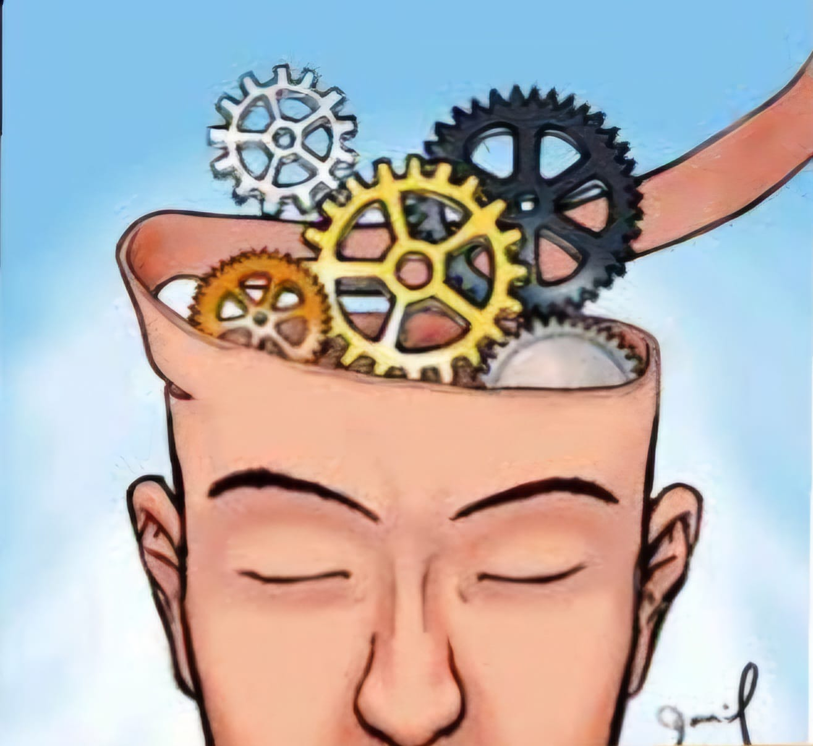
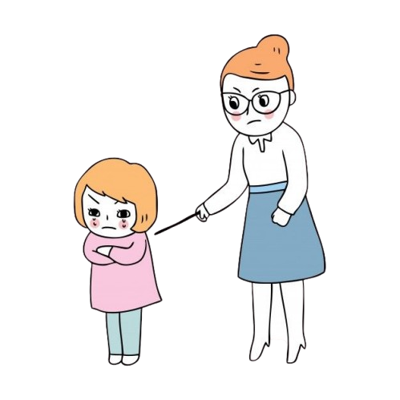
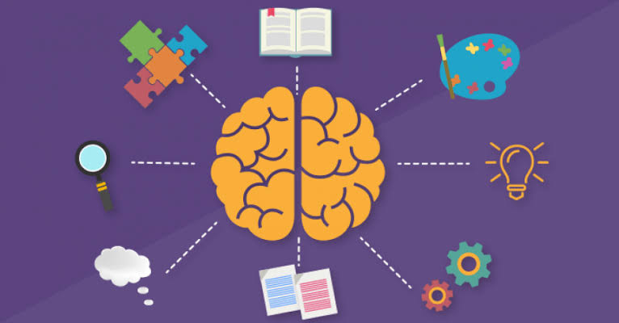
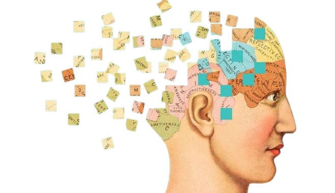
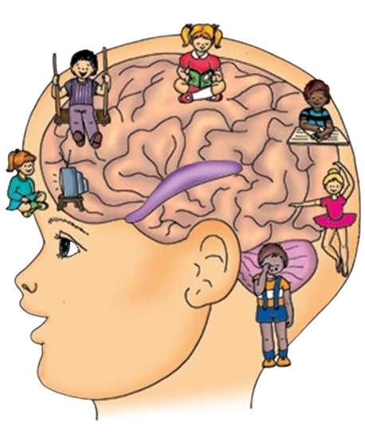
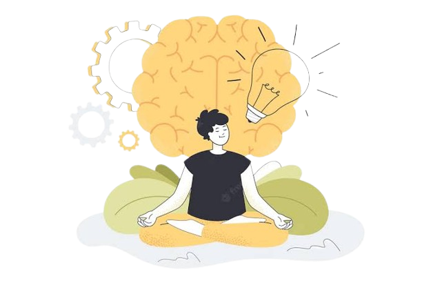

En esta página exploraremos las principales teorías psicológicas aplicadas en el ámbito educativo. A través de contenido interactivo y ejemplos prácticos, una vez que hayas acabado de leer todas las teorías podrás realizar un cuestionario para evaluar lo aprendido.
Identificar las principales teorías psicológicas a través de una experiencia interactiva en una página web, a fin de que sea una herramienta útil para la práctica docente y el aprendizaje de los alumnos.
El cognitivismo es una corriente psicológica que pone énfasis en los procesos mentales internos como la memoria, el pensamiento y la resolución de problemas (UNIR México, 2024). Esta teoría sostiene que el aprendizaje es un proceso activo de construcción de conocimiento.
En el aula, el cognitivismo puede aplicarse a través de estrategias como el uso de mapas conceptuales, la resolución de problemas en grupo y actividades que fomenten la organización mental de la información.
Según Montagud (2020), el conductismo se enfoca en el comportamiento observable y cómo este puede ser modificado mediante estímulos y refuerzos, el aprendizaje es una respuesta a estímulos externos.
El conductismo se puede aplicar utilizando recompensas y castigos, como el uso de puntos para reforzar comportamientos positivos. Las pruebas frecuentes también permiten medir el progreso.
El constructivismo sostiene que los estudiantes construyen su propio conocimiento a través de la experiencia y la reflexión. En lugar de recibir pasivamente información, los estudiantes se convierten en actores activos en su proceso de aprendizaje (Montagud, 2020).
Se pueden aplicar proyectos colaborativos, el aprendizaje basado en problemas y actividades que fomenten la reflexión personal y grupal.
El estructuralismo estudia la mente humana a través de sus componentes básicos. Esta teoría sostiene que el aprendizaje y la comprensión se logran a través del análisis de los elementos fundamentales que componen una experiencia (Guzmán, 2018).
El estructuralismo puede aplicarse en el aula a través de ejercicios que descompongan conceptos complejos en sus componentes más simples para facilitar el aprendizaje.
El funcionalismo pone énfasis en cómo los procesos mentales ayudan a los individuos a adaptarse a su entorno. Según esta teoría, el aprendizaje está relacionado con la adaptación al medio ambiente (The Decision Lab, 2025).
Se pueden aplicar métodos de enseñanza que conecten el aprendizaje con situaciones reales, promoviendo la adaptación del estudiante a diferentes contextos.
De acuerdo con Torres (2015), la teoría de la Gestalt se enfoca en cómo los individuos perciben patrones y estructuras completas, más que en los elementos individuales que componen esas estructuras.
Utilizar actividades que promuevan la percepción de patrones y relaciones dentro de los conceptos, facilitando la comprensión holística.
El humanismo se centra en la experiencia humana, la motivación y la autorrealización (Triglia, 2015). En la educación, busca desarrollar al estudiante de manera integral, tanto en lo cognitivo como en lo emocional.
Crear un ambiente que fomente la autonomía, el desarrollo personal y la motivación intrínseca de los estudiantes.
